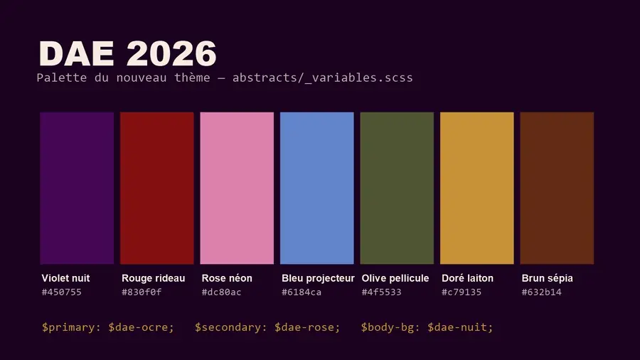
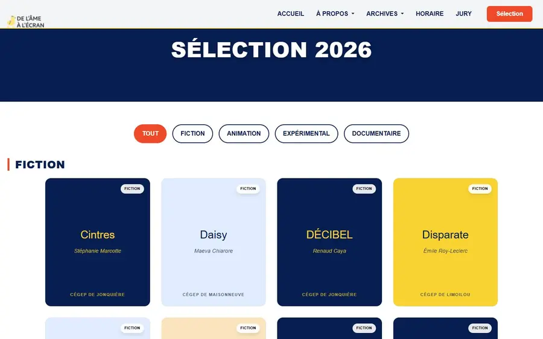
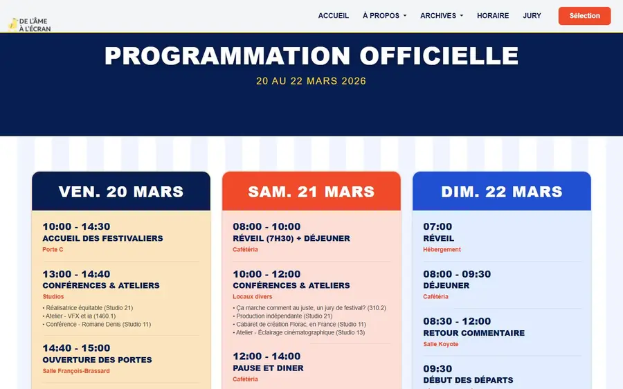
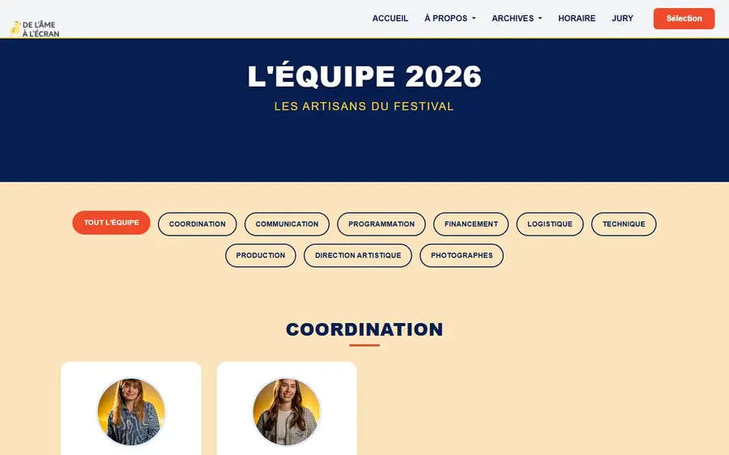
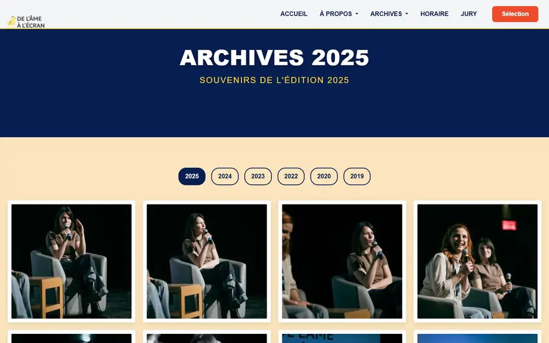
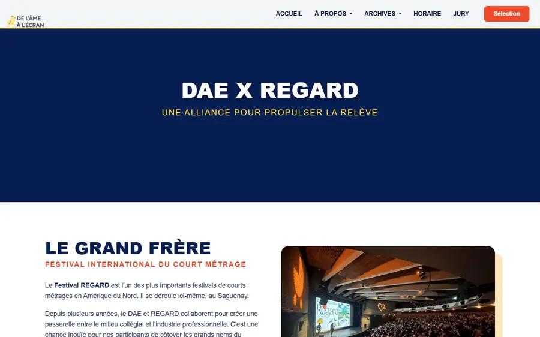
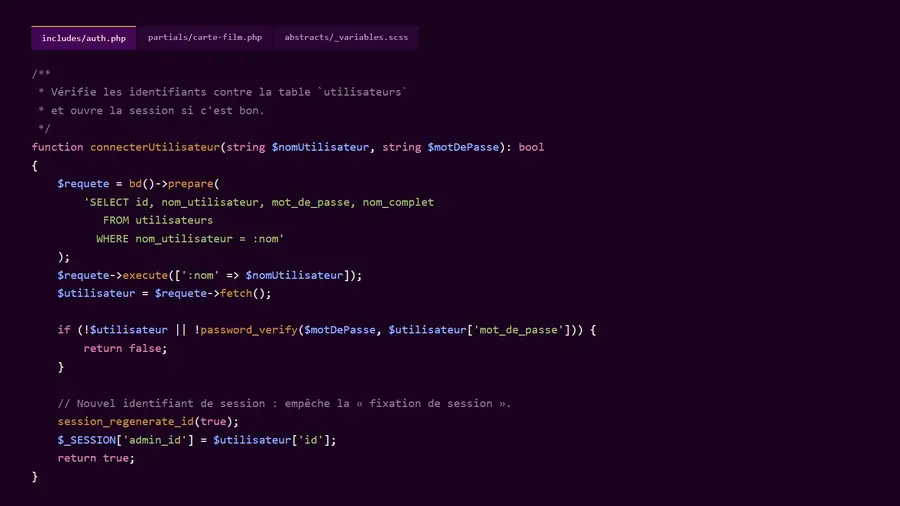
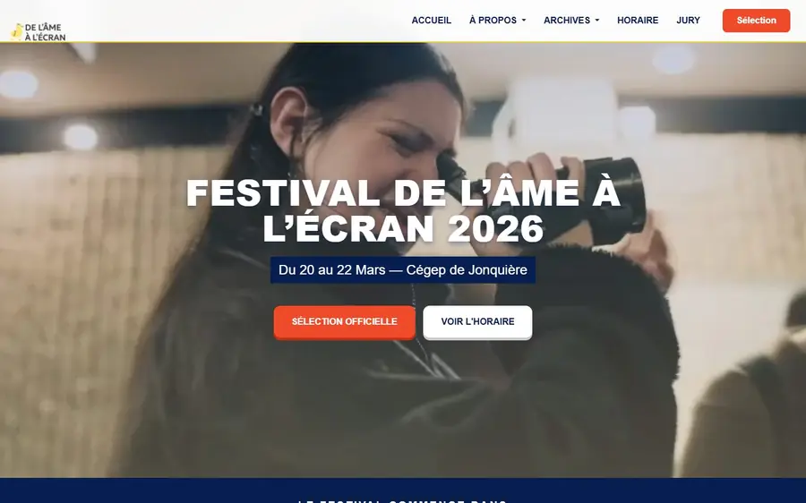

Projet 02 · Éditions 2026-2027 · Implication étudiante
Le site du festival : avant et après
Le site de l’édition 2026, réalisé en équipe de six, et celui de l’édition 2027, avec son back-office, que je développe seul.
- Web
Mon rôle
Avant (édition 2026)
Au sein d’une équipe de six, le contenu des pages et l’affiche.
Après (édition 2027)
Seul, de la palette au back-office.
Outils
Avant (édition 2026), ma part
- Photoshop
- Illustrator
Avant, pile du site (équipe)
- PHP
- MySQL
- SCSS
- JavaScript
Après (édition 2027)
- PHP (PDO)
- MySQL
- Bootstrap 5 en SCSS
- JavaScript
- FontAwesome
Côté coulisses
-
Brief
Avant
Refondre le site du festival pour l’édition 2026.Après
Pour l’édition 2027, le remplacer par un thème repensé que l’équipe peut gérer sans toucher au code. -
Plan
Avant
L’équipe de six se réunit chaque semaine ; je m’occupe surtout du contenu des pages.Après
Une palette « cinéma » de sept couleurs branchée dans Bootstrap, un seul fichier de variables, aucune couleur écrite en dur, un SCSS en couches (abstracts, base, components, layout, pages).
Après : la palette « cinéma » -
Production
Avant
Un site à contenu dynamique. La sélection officielle se filtre par catégorie (fiction, animation, expérimental, documentaire). L’horaire est présenté jour par jour. Les pages Jury, Équipe, Archives (2019 à 2025) et Regard sont générées par la base de données. Un compte à rebours annonce l’ouverture. Ma part : le contenu des pages et l’affiche.Après
Des gabarits PHP réutilisables (carte de film, carte de membre), des requêtes préparées partout et une protection XSS à chaque affichage. Un back-office sécurisé (mots de passe hachés, session régénérée à la connexion) pour gérer la sélection, le jury, l’horaire et l’équipe.
Avant : la sélection officielle 
Avant : l’horaire jour par jour 
Avant : l’équipe 
Avant : les archives 
Avant : la page Regard 
Après : un extrait de la connexion sécurisée -
Résultat
Avant
Le site de l’édition 2026 est en ligne (delamealecran.com).Après
Le site de l’édition 2027 est en production ; il reste à intégrer les images et les textes. Mise en ligne prévue début décembre 2026.
Avant : l’accueil du site en ligne